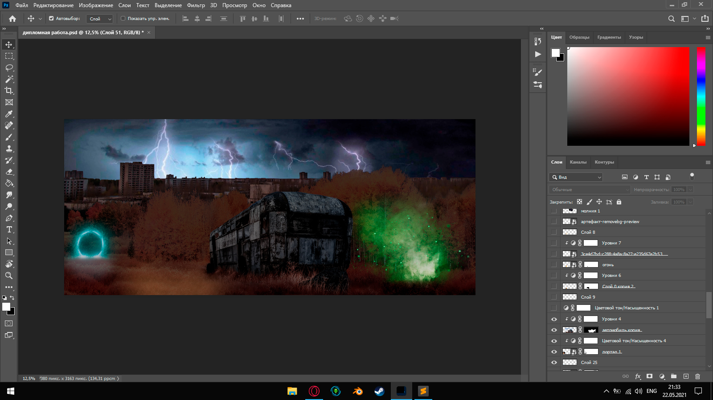

Дипломная работа
Данная работа была сделана в постапокалипстической тематике, действия происходят в чернобыле. На фото присутствую не только фото чернобыля, но и разные места из чернобыля, такие как: Рыжий лес, Колесо обозрения. Внимание концентрируется на центре фото, показано как сталкер ищет артефакт который находиться на крыше фургона, но он его не видет, так как артефакты видны только если подойти к ним вплотную. Так же на фото присутствуют различные мелкие детали, такие как: Портал образованный при радиоактнивном всплеске энергии, костер показывающий что в данной части зоны уже кто то был, и зеленый дым с летающими частицами,зеленый дым показывает наличие радиоактивных болот(так называемые топы).
На создание этой фотографии ушло более 7 часов. Так же, данный сайт писался в полностью с нуля, в ручную.
Все этапы работы будут показаны на скриншотах из фотошопа.
Добавление неба.
Добавление заднего фона(припяти).
Добавление второстепенного плана(рыжий лес).
Добавление аномалий.
Добаления фургона на передний план.
Добавление других мелких деталей.
Добавление освещения и главного героя на передний план.
Добавление загадочного артефакта на фургон.
Добавление дымки для динамичности.
Финальная цветокоррекция.

Вот такая получилась работа,я думаю это не самая лучшая моя работа в будующем, но я буду больше углубляться в графику и изучать её.
Спасибо за внимание!